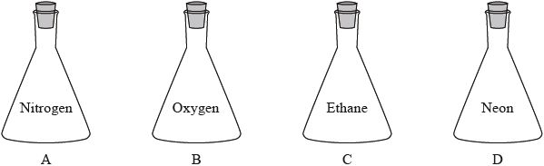
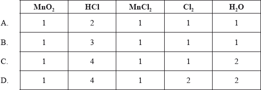
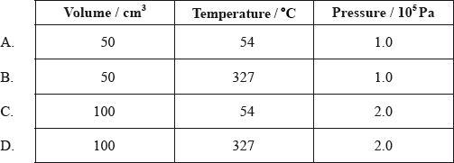
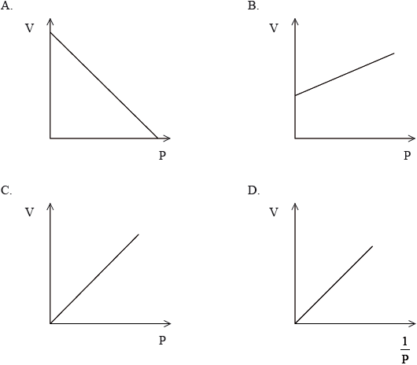

HL Paper 1
At which temperature, in K, assuming constant pressure, is the volume of a fixed mass of gas at 127 °C doubled?
A. 200 K
B. 254 K
C. 400 K
D. 800 K
\({\text{300 c}}{{\text{m}}^{\text{3}}}\) of water is added to a solution of \({\text{200 c}}{{\text{m}}^{\text{3}}}\) of \({\text{0.5 mol}}\,{\text{d}}{{\text{m}}^{ - 3}}\) sodium chloride. What is the concentration of sodium chloride in the new solution?
A. \({\text{0.05 mol}}\,{\text{d}}{{\text{m}}^{ - 3}}\)
B. \({\text{0.1 mol}}\,{\text{d}}{{\text{m}}^{ - 3}}\)
C. \({\text{0.2 mol}}\,{\text{d}}{{\text{m}}^{ - 3}}\)
D. \({\text{0.3 mol}}\,{\text{d}}{{\text{m}}^{ - 3}}\)
Four identical containers under the same conditions are filled with gases as shown below. Which container and contents will have the highest mass?

What is the pressure, in Pa, inside a 1.0 m3 cylinder containing 10 kg of H2 (g) at 25 ºC?
R = 8.31 J K–1 mol–1; pV = nRT
A. \(\frac{{1 \times {{10}^4} \times 8.31 \times 25}}{{1.0 \times {{10}^3}}}\)
B. \(\frac{{5 \times {{10}^2} \times 8.31 \times 298}}{{1.0}}\)
C. \(\frac{{1 \times 8.31 \times 25}}{{1.0 \times {{10}^3}}}\)
D. \(\frac{{5 \times {{10}^3} \times 8.31 \times 298}}{{1.0}}\)
A compound with Mr = 102 contains 58.8 % carbon, 9.80 % hydrogen and 31 % oxygen by mass.
What is its molecular formula?
Ar: C = 12.0; H = 1.0; O = 16.0
A. C2H14O4
B. C3H4O4
C. C5H10O2
D. C6H14O
Which solution neutralizes 50.0 cm3 of 0.120 mol dm–3 NaOH (aq)?
A. 12.5 cm3 of 0.080 mol dm–3 H3PO4
B. 25.0 cm3 of 0.120 mol dm–3 CH3COOH
C. 25.0 cm3 of 0.120 mol dm–3 H2SO4
D. 50.0 cm3 of 0.060 mol dm–3 HNO3
What mass, in g, of hydrogen is formed when 3 mol of aluminium react with excess hydrochloric acid according to the following equation?
\[{\text{2Al(s)}} + {\text{6HCl(aq)}} \to {\text{2AlC}}{{\text{l}}_{\text{3}}}{\text{(aq)}} + {\text{3}}{{\text{H}}_{\text{2}}}{\text{(g)}}\]
A. 3.0
B. 4.5
C. 6.0
D. 9.0
Which coefficients would balance this equation?
__ \({\text{Mn}}{{\text{O}}_2} + \) __ \({\text{HCl}} \to \) __ \({\text{MnC}}{{\text{l}}_2} + \) __ \({\text{C}}{{\text{l}}_2} + \) __ \({{\text{H}}_2}{\text{O}}\)

4.0 g of solid sodium hydroxide is added to \({\text{0.10 d}}{{\text{m}}^{\text{3}}}\) of \({\text{1.0 mol d}}{{\text{m}}^{ - 3}}\) aqueous sulfuric acid.
\[{\text{2NaOH(s) + }}{{\text{H}}_{\text{2}}}{\text{S}}{{\text{O}}_{\text{4}}}{\text{(aq) }} \to {\text{ N}}{{\text{a}}_{\text{2}}}{\text{S}}{{\text{O}}_{\text{4}}}{\text{(aq) + 2}}{{\text{H}}_{\text{2}}}{\text{O(l)}}\]
Which statement is correct?
A. Neither reactant is in excess.
B. 0.10 mol \({\text{N}}{{\text{a}}_{\text{2}}}{\text{S}}{{\text{O}}_{\text{4}}}\) is formed.
C. Excess \({{\text{H}}_{\text{2}}}{\text{S}}{{\text{O}}_{\text{4}}}\) remains in solution.
D. Excess NaOH remains in solution.
What are the coefficients of \({{\text{H}}_{\text{2}}}{\text{S}}{{\text{O}}_{\text{4}}}{\text{(aq)}}\) and \({{\text{H}}_{\text{3}}}{\text{P}}{{\text{O}}_{\text{4}}}{\text{(aq)}}\) when the following equation is balanced using the smallest possible whole numbers?
___ \({\text{C}}{{\text{a}}_3}{{\text{(P}}{{\text{O}}_4}{\text{)}}_2}{\text{(s)}} + \) ___ \({{\text{H}}_2}{\text{S}}{{\text{O}}_4}{\text{(aq)}} \to \) ___ \({\text{CaS}}{{\text{O}}_3}{\text{(s)}} + \) ___ \({{\text{H}}_3}{\text{P}}{{\text{O}}_4}{\text{(aq)}}\)

What volume of carbon dioxide, in dm\(^3\) under standard conditions, is formed when 7.00 g of ethene \(({{\text{C}}_2}{{\text{H}}_4}{\text{, }}{M_{\text{r}}} = 28.1)\) undergoes complete combustion?
A. \(\frac{{22{\text{.}}4 \times 28{\text{.}}1}}{{7{\text{.}}00}}\)
B. \(\frac{{22{\text{.}}4 \times 7{\text{.}}00}}{{28{\text{.}}1}}\)
C. \(\frac{{2 \times 22{\text{.}}4 \times 28{\text{.}}1}}{{7{\text{.}}00}}\)
D. \(\frac{{2 \times 22{\text{.}}4 \times 7{\text{.}}00}}{{28{\text{.}}1}}\)
Under which conditions does \({\text{C}}{{\text{H}}_{\text{4}}}\) have the same number of molecules as \({\text{100 c}}{{\text{m}}^{\text{3}}}\) of \({{\text{O}}_{\text{2}}}\) at 27 °C and \(1.0 \times {10^5}{\text{ Pa}}\)?

7.102 g of Na2SO4 (M = 142.04 g mol–1) is dissolved in water to prepare \({\text{0.5000 d}}{{\text{m}}^{\text{3}}}\) of solution. What is the concentration of \({\text{N}}{{\text{a}}_{\text{2}}}{\text{S}}{{\text{O}}_{\text{4}}}\) in \({\text{mol}}\,{\text{d}}{{\text{m}}^{ - 3}}\)?
A. \(2.500 \times {10^{ - 2}}\)
B. \(1.000 \times {10^{ - 1}}\)
C. \(1.000 \times 10\)
D. \({\text{1.000}} \times {\text{1}}{{\text{0}}^{\text{2}}}\)
Which expression gives the sum of all the coefficients for the general equation for the complete
combustion of hydrocarbons?
___ \({{\text{C}}_x}{{\text{H}}_y}{\text{(g)}} + \) ___ \({{\text{O}}_{\text{2}}}{\text{(g)}} \to \) ___ \({\text{C}}{{\text{O}}_{\text{2}}}{\text{(g)}} + \) ___ \({{\text{H}}_{\text{2}}}{\text{O(l)}}\)
A. \(1 + x + \frac{y}{4}\)
B. \(1 + x + \frac{y}{2}\)
C. \(1 + 2x + \frac{{3y}}{4}\)
D. \(1 + 2x + \frac{{3y}}{2}\)
Which graph represents the relationship between volume and pressure for a fixed mass of gas at constant temperature?
